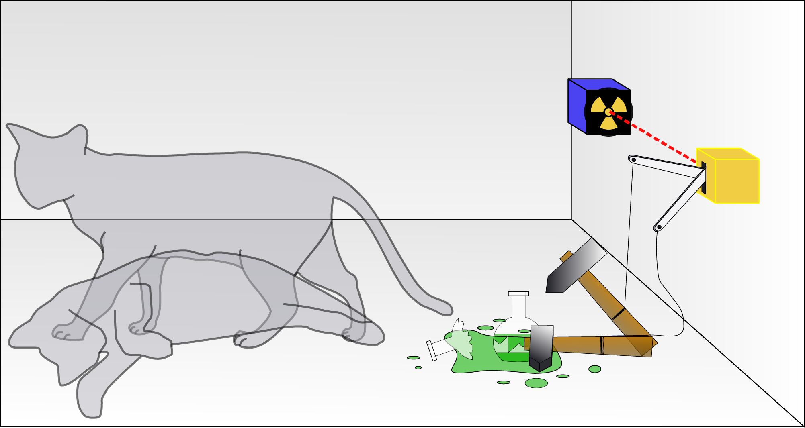

Coherence is defined as “the quality of being logical and consistent.” Attempting to understand the importance of the title in the context of the plot requires some science. During the film the characters discuss Schrödinger's cat as a way to comprehend the events of the night, so lets start there.
Schrödinger's cat is a famous thought experiment. It classically consists of a closed box with a cat, a vial of poison, and a radioactive source. Inside, a monitoring device will release the dangerous poison if it detects decaying atoms. Schrödinger believed that while the box was closed and the cat was therefore unobserved, the cat can be considered both alive and dead. This is quantum superposition. Once we open the box and observe the experiment, the state of quantum superposition ends and we are left with one of the realities; a living or dead cat.
The thought experiment can be directly applied to Coherence. The cat is Emily. We can think of all the different realities as whether the cat is “alive” or “dead.” The comet is “the box” because it constructs and contains Emily’s experiences and it causes the “experiment” to end once it passes, as if the box was opened. Throughout the night she experiences many different realities all happening at once (quantum superposition,) and attempts to control the “experiment” by deciding on an unknown reality to be in when the box “opens.”
Midway through the film they begin to read Hugh’s book. He directly quotes the book, stating “There is another theory (in regards to Schrödinger's cat): that two states continue to exist separate and decoherent from each other, each creating a new branch of reality based on the two outcomes. Quantum Decoherence ensures that the different outcomes have no interaction with each other.” Hugh is referencing the many-worlds interpretation proposed by Hugh Everett in 1957. For the rest of the film, the group struggles to maintain decoherence from the other realities to no avail.
A quantum physics student may appreciate this film on a level I cannot, or I could be blissfully ignorant of incorrect science. Either way when it comes to quantum coherence, merely scratching the surface of this film will have to suffice.
© Arrien Gadue, 2019
{kind=link}